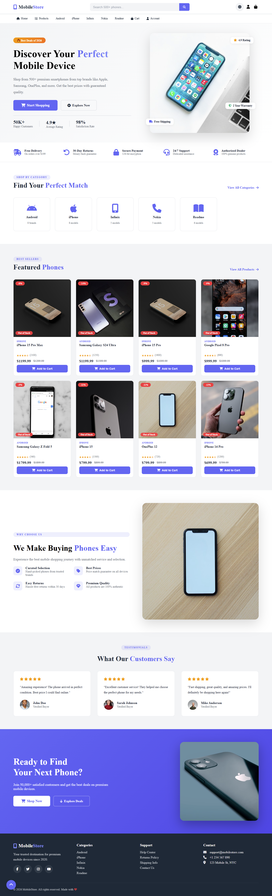
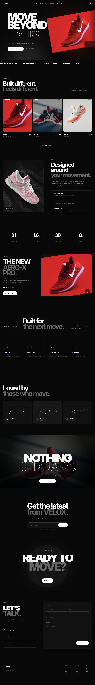

Web development
Creating responsive interfaces with HTML, CSS, and JavaScript.
Available for opportunities
Web Developer & IT Student
I'm Umair Khan, an aspiring web developer focused on responsive design, clean interfaces, and continuous learning.
About me
I enjoy turning ideas into polished, easy-to-use websites. My work combines a practical IT foundation with attention to visual detail, usability, and reliable development.
I am focused on growing as a full stack developer and creating digital products that feel simple, fast, and professional on every screen.
Creating responsive interfaces with HTML, CSS, and JavaScript.
Using hierarchy, spacing, and thoughtful details to make pages feel professional.
Always strengthening my skills and exploring new technologies.
Capabilities
A focused set of front-end and professional skills, with an emphasis on quality and reliable collaboration.
Education
Current studies
Chandra Polytechnic Institute
Higher secondary education
Government Shaheed Abdul Majeed College Bhatsera
Secondary education
Government High School Balwan
Portfolio
Projects that demonstrate my focus on polished, responsive front-end experiences.

E-commerce website
A modern online mobile store interface with featured products, category browsing, customer testimonials, and a clear shopping journey.

E-commerce website
A stylish shopping experience for footwear, designed to help customers discover products and browse with ease.
Contact
Whether you have an opportunity, a project, or simply want to connect, I'd be happy to hear from you.